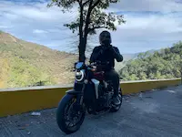

Gustavo Salazar | WDD 130

Hello! My name is Gustavo Salazar and I am from Mexico but currently in Austin, TX
working as a Project Engineer. Now my goal is to change industries and become a
Software Engineer within a couple of years since I am working full-time.